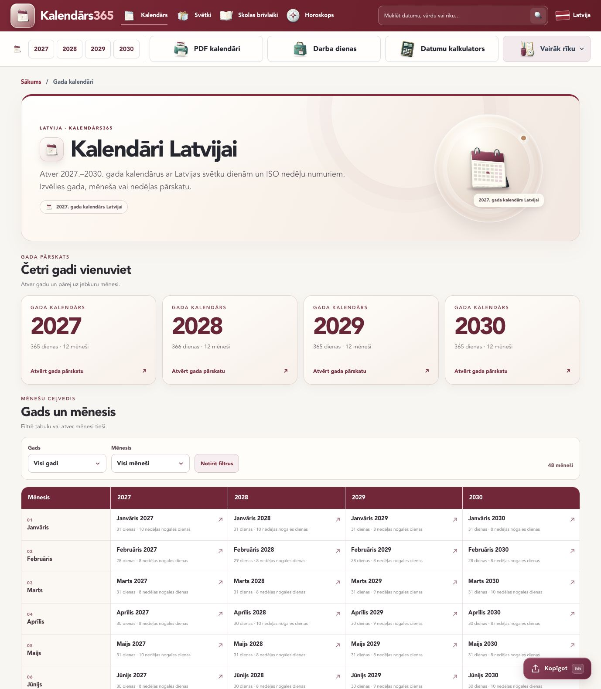
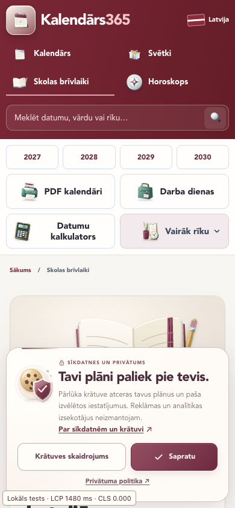
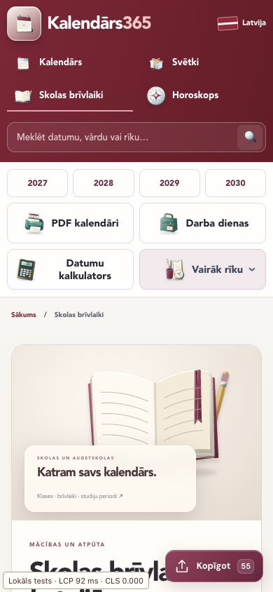
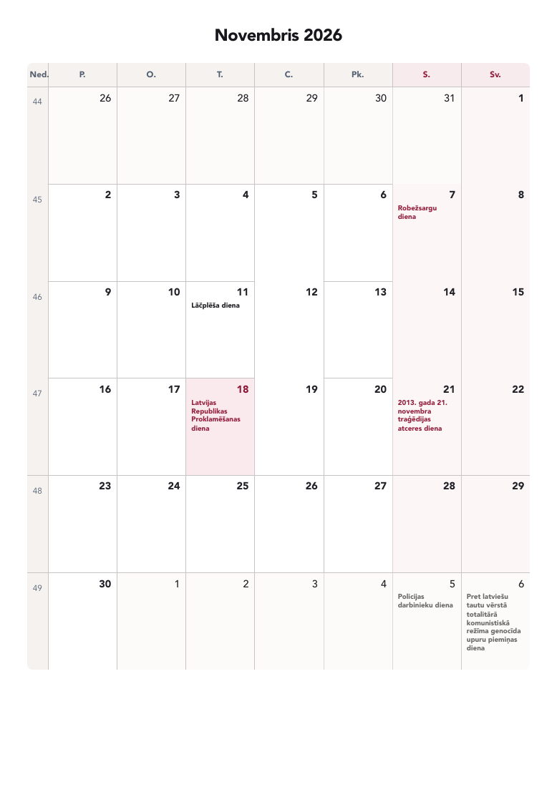
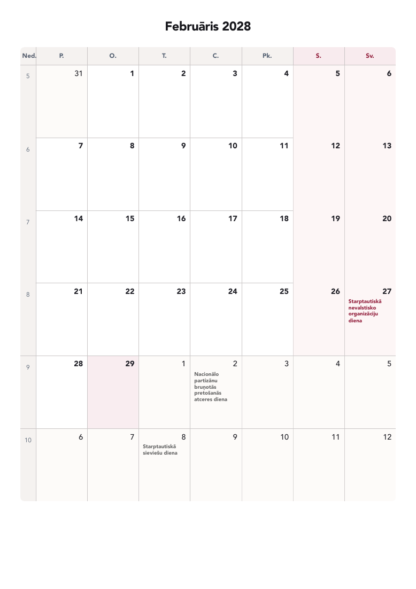

Boş kalan ana takvimler; ay, hafta ve gün görünümüyle genel veriyi sunuyor. İsim dizininde 60 kayıt ve aylık liste var. Kişisel notlar bu HTML’e eklenmiyor.
Kullanıcı ve tarayıcı aynı temel takvimi görüyor.
41 tam stil birleşimi ve mevcut CSS sırası korunuyor. Yaklaşık 130 MB toplam inline tekrar kaldırıldı; body gizleme veya geç CSS takası yok.
Canonical, sitemap ve JSON-LD aynı doğrulanabilir route kaynağını kullanıyor. 901 belge ve görsel kimliği birbirini tutuyor.
Blog içeriği değişince tarih izleniyor. Sadece saat, sayaç veya kontrol zamanı değişti diye bütün arşiv yenilenmiş gösterilmiyor.
1.461 gün, 48 ay, ISO hafta yılı sınırları ve dört saat diliminde 3.307 bağımsız assertion geçti. 29 Şubat 2028 doğrulandı.
1.153 PDF, 1.153 yüksek kalite Attēls ve 1.153 önizleme kaynak/build eşleşmesi geçti. İç navigasyon planı başlangıçla aynı bağlantıları ve sıralamayı içeriyor.
Canlı ortama yayın yapılmadı. Bu rapordaki sonuçlar yeni canlı sürüm veya Google indeksleme sonucu değildir.
“Yıl seç, ay bul” ve 48 ay tanıtım bandı kaldırıldı.
Takvim rehberinin dört yıl kartı, 48 ay bağlantısı ve filtreleri yerinde. Yalnızca işaretlediğiniz yinelenen tanıtım bölümü çıkarıldı.

Mobil örneklerde içerik daha erken görünmeye başladı.
Her sayfada üç ölçümün medyanı ve min–maks aralığı kaydedildi. Mobil örneklerde LCP %11–18 iyileşti. Masaüstü medyanları 12–56 ms yükseldi; masaüstü için hızlanma iddia edilmiyor.
| Profil ve sayfa | Önce · medyan / aralık | Sonra · medyan / aralık | Fark |
|---|---|---|---|
| desktop/ | 184 ms[172, 196] | 240 ms[228, 272] | 30.43% |
| desktop/kalendars/2027/ | 168 ms[168, 236] | 216 ms[212, 216] | 28.57% |
| desktop/kalendars/2028/februaris/ | 124 ms[116, 156] | 136 ms[128, 136] | 9.68% |
| desktop/skolas-brivlaiki/ | 108 ms[100, 136] | 120 ms[108, 148] | 11.11% |
| mobile-lab/ | 1932 ms[1908, 1968] | 1584 ms[1572, 1592] | -18.01% |
| mobile-lab/kalendars/2027/ | 1428 ms[1424, 1488] | 1180 ms[1172, 1216] | -17.37% |
| mobile-lab/kalendars/2028/februaris/ | 1300 ms[1284, 1312] | 1076 ms[1016, 1088] | -17.23% |
| mobile-lab/skolas-brivlaiki/ | 1476 ms[1464, 1480] | 1320 ms[1284, 1364] | -10.57% |
Koşullar ve ölçümün sınırı
Masaüstü 1440×900; mobil 390×844, 4× CPU yavaşlatma, 150 ms ağ gecikmesi ve 200.000 bayt/sn indirme. HTTP cache devre dışı; loopback gzip. İlk eşzamanlı işlemlerle çakışan 12 masaüstü örneği ayrı saklandı ve bütün set tekrar ölçüldü.
Bu bir Lighthouse skoru veya gerçek kullanıcı CWV değildir. INP ölçülmedi. Uzun görevler ayrıca kaydedildi; bazılarında devam ediyor. İyileşme trafik, sıra veya AdSense garantisi değildir.
Ham HTML toplamı: 232.950.374 → 104.783.428 bayt. Azalma: 128.166.946 bayt. Baskı dosyalarının çözünürlüğü değişmedi.
Marka, tipografi ve sayfa düzeni korunuyor.
Aşağıdaki karşılaştırma aynı 390 piksel mobil görünümünü gösterir. Masaüstü düzeni ayrıca DOM kontrolleri ve yukarıdaki normal tarayıcı görüntüsüyle doğrulandı.


Fonksiyonel testte “Sapratu” seçildiği için son ekranlarda bildirim kapalıdır. Bu fark tasarım değişikliği veya hız kanıtı olarak kullanılmaz. Performans ana setleri bildirim açıkken alındı. Ekrandaki küçük yerel ölçüm etiketi public build’e dahil değildir.
45 temsilî adres masaüstü ve mobilde, sekiz kritik adres ayrıca 320 ve 360 pikselde incelendi. Sonraki 106 görünüm kontrolünde yatay taşma yok. 901 sayfanın her birinin tarayıcıda görsel olarak tek tek incelendiği iddia edilmez.
Takvim tek A4’e sığıyor.
Ana sayfa ve Şubat 2028 tarayıcıdan PDF olarak basıldı, PNG’ye çevrilip kontrol edildi. Başlık ve tam takvim aynı sayfada; gezinme, hava kartı ve alt bölüm basılmıyor. İndirilebilir kabul edilmiş tasarımlar yeniden çizilmedi.


Gerçek PDF, Attēls ve ICS düğmelerinden indirilen dosyalar doğrulandı. Şubat 29’a sentetik not eklenip tekrar açıldı, ardından temizlendi. Not, genel HTML veya ölçüm payload’una taşınmadı.
Yerel başarı ile dış onay ayrı tutuldu.
- Ruby 4.0.9, Bundler 4.0.20 ve Jekyll 4.4.1 ile ek üretim ayarlı yerel derleme ve regresyon kontrolleri geçti.
- 898 indekslenebilir landing, 4.601 görsel sitemap URL’si, lisans sayfası için noindex,follow ve gerçek 404 davranışı korunuyor.
- HTTPS/non-www yönlendirmeleri mevcut canlı ortamda yalnızca salt okunur HEAD istekleriyle kontrol edildi. Bu değişiklikler canlıya gönderilmedi.
- Search Console, CrUX ve canlı Google rich result verisi yok. Sıralama, indekslenme ve trafik garantisi verilmedi.
- Resmî adres talimatınızla boş bırakıldı. Ana dili editörü, hukuk veya WCAG sertifikası yapılmış sayılmaz.
- Güncel tüm konsolide hukuk metinleri eksiksiz yeniden doğrulanamadı; gelecekteki resmî kararlar tahminle kesinleştirilmedi.
Yayın, bu görevden sonra ayrı ve açık “canlıya al” talimatınızı gerektirir. Yayın ve 7/28/56 günlük takip kılavuzu hazır; şu anda hiçbir uzak adım yürütülmedi.
Kanıtlarıyla birlikte bütün çalışma dosyaları.
Denetim ve bulgularSEO-AUDIT.md↗Testler ve ölçüm koşullarıSEO-VALIDATION.md↗Değişiklik kaydıSEO-CHANGELOG.md↗Resmî kaynaklarSEO-SOURCES.md↗901 URL envanteriURL-INVENTORY.csv↗Arama niyeti haritasıSEARCH-INTENT-MAP.csv↗İndeks ve query politikasıINDEXATION-POLICY.csv↗Baskı dosyası eşleşmeleriDOWNLOAD-MANIFEST.csv↗Kaynak dosyası kontrol özetleriCHANGESET.csv↗Gelecekteki yayın kılavuzuDEPLOY-RUNBOOK.md↗Hedefli geri almaROLLBACK.md↗
Bu dosyalar docs/seo altında public build’den dışlanır. Başlangıç kaynak yedeği ve ayrıntılı ham kayıtlar özel çalışma alanında korunur.